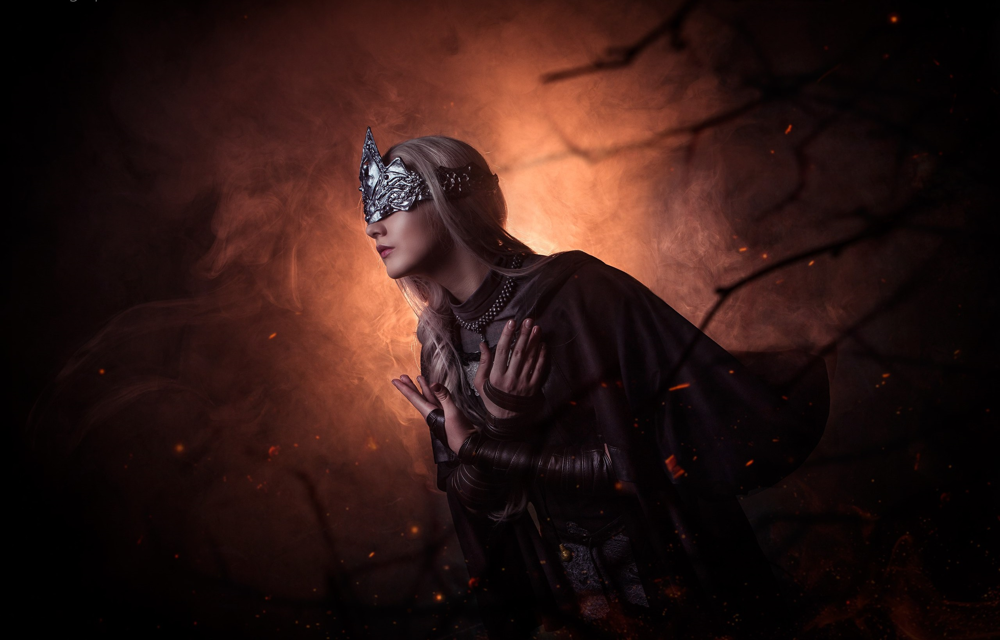
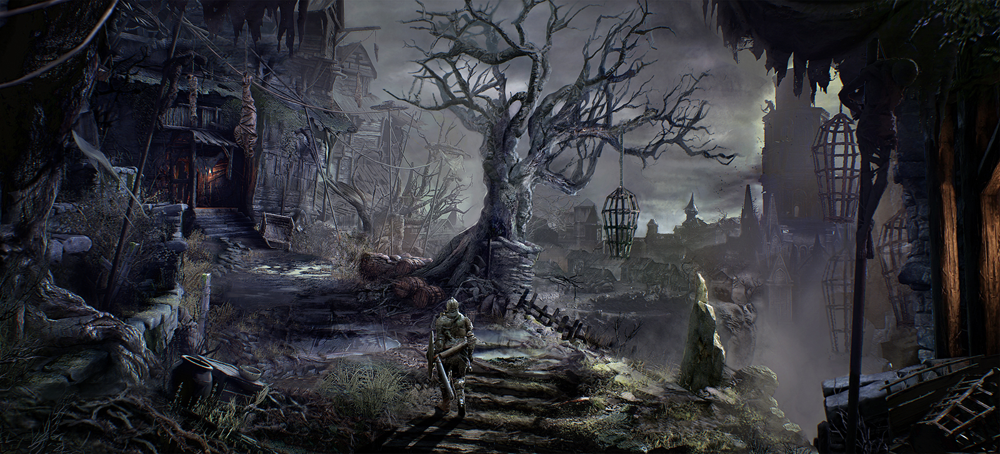
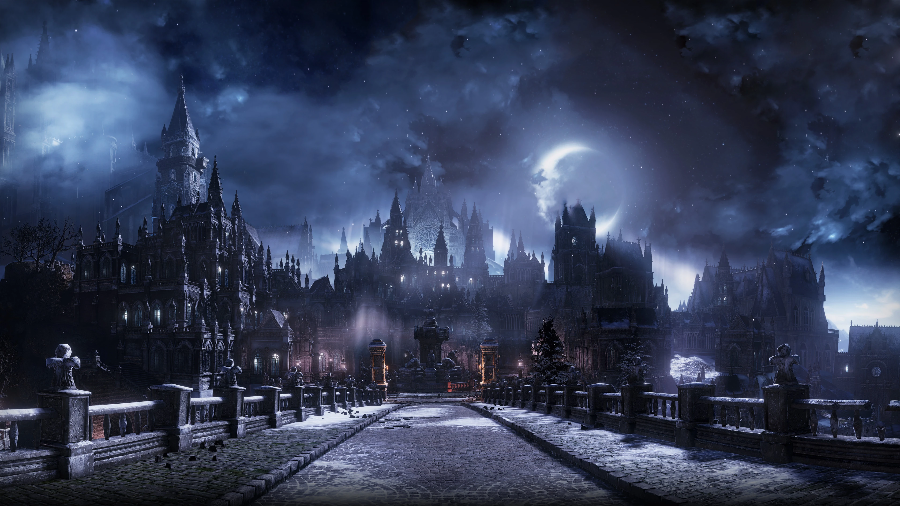
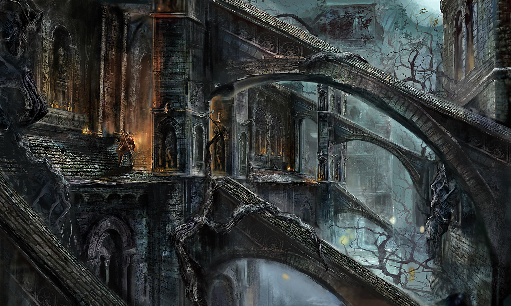
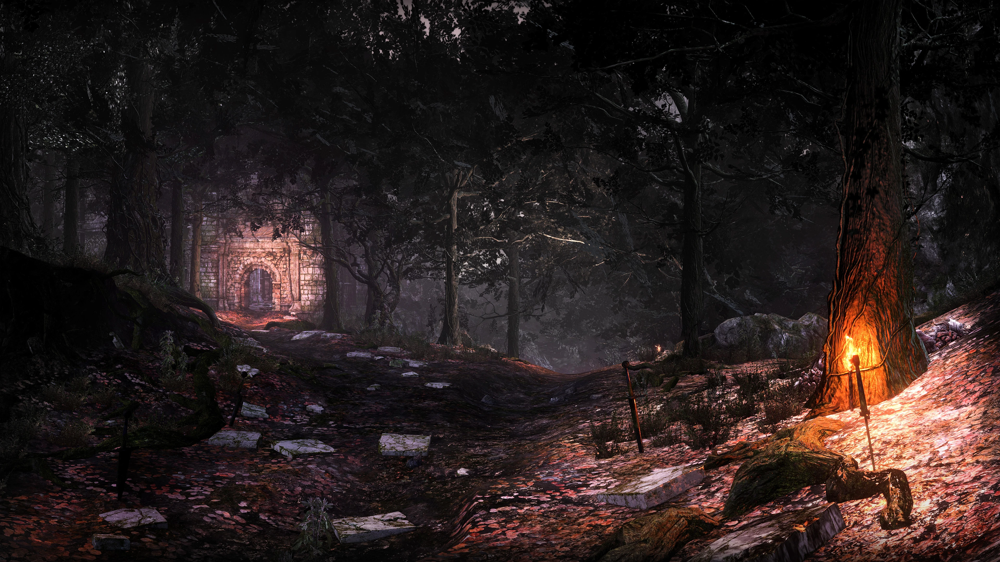
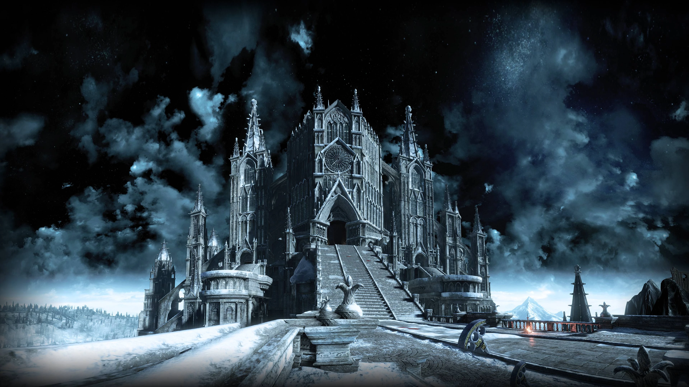

Aradığın Herşey Tek Bir Sekmede
Sağ Üstteki arama butonunu kullanarak aradığın lokasyonu
bulabilirsin şimdi butona tıkla

Dark Souls serisinin merkez hub'ıdır. Burası, oyuncunun seviye atlayabildiği, eşya satın alabildiği ve hikayede ilerlerken karşılaştığı NPC'lerin toplandığı güvenli bir alandır. İlk Sönmüş, burada Fire Keeper ile tanışır.

Oyunun başlangıç lokasyonudur ve Lothric Kalesine giden ilk kapıdır. Zorlu şövalyeler ve ilk önemli boss (Vordt of the Boreal Valley) bu bölgede bulunur. Düşmanları dikkatlice incelemek, hayatta kalmak için kritik öneme sahiptir.

Korkunç düşmanlarla ve tuzaklarla dolu geniş bir köydür. Buradaki köylüler ve devler, yeni oyuncular için ciddi bir engel teşkil edebilir. Bölgenin sonunda Curse-Rotted Greatwood bossu beklemektedir.

Aniden soğuk ve ay ışığıyla aydınlanmış büyülü bir şehir. Pontiff Sulyvahn tarafından yönetilir. Şehrin mimarisi, Anor Londo'nun ihtişamını hatırlatır ancak buzlu sis ve karanlık büyülerle kaplıdır. Bu bölge, aynı zamanda ünlü Darkmoon Greatsword'un kökenlerine de işaret eder.

Deacon of the Deep ve Saint Aldrich'in bulunduğu devasa, gotik bir katedral. Çevresi devasa mezarlıklar ve bataklıklarla çevrilidir. İçerideki labirent benzeri yapılar ve Patches gibi NPC'ler tarafından kurulan tuzaklar, burayı zorlu bir keşif alanı yapar.

Yavaşlatan ve zehirleyen bir bataklık bölgesi. Oyuncunun ilerlemesi için üç meşalenin söndürülmesi gerekir. Burası aynı zamanda Abysswatchers (Farron'un Gözcüleri) boss dövüşünün yapıldığı alandır ve Artorias'ın ruhunu taşıyan birliğin son kalesidir.

Serinin ilk oyunundan tanıdık, Tanrıların Kralı Gwyn'in terk edilmiş şehri. Irithyll'in hemen ilerisinde bulunur ve Dark Souls III'te yoğun bir şekilde kış manzarası altındadır. Burada, Aldrich, Devourer of Gods bossu ile yüzleşilir.

Oyunun ana kalelerinden biridir ve Lord of Cinder'ın ikametgahıdır. Geniş ve karmaşık bir yapıya sahiptir; kanatlı şövalyeler ve Ejderhalarla karşılaşılır. Burası, Grand Archives'e ve son boss'lardan biri olan Twin Princes (İkiz Prensler) ile dövüşe giden yoldur.